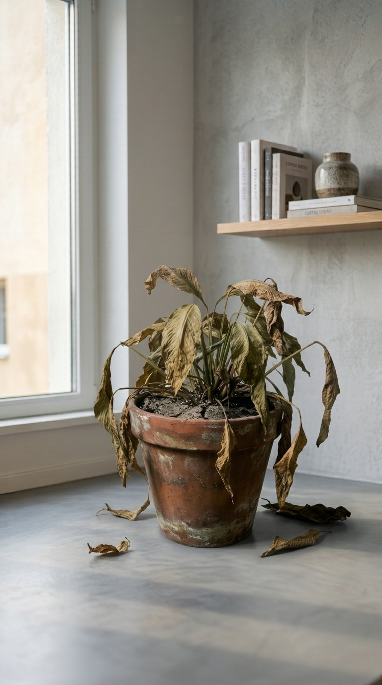
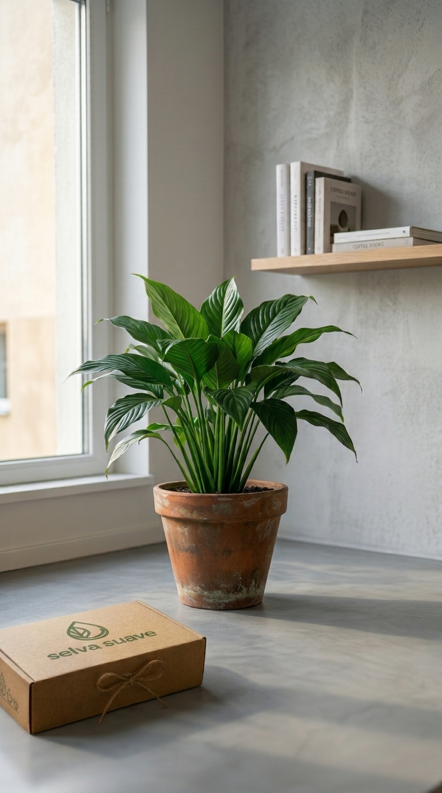
MERECEN VIVIR
NO SOLO SOBREVIVIR
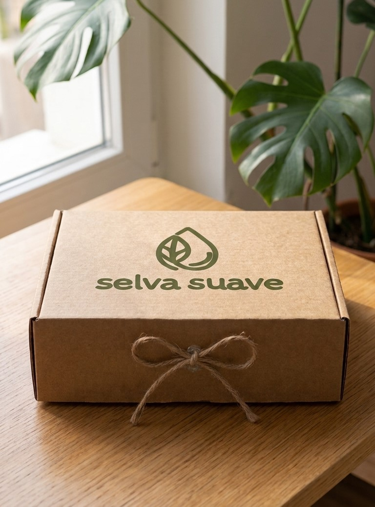
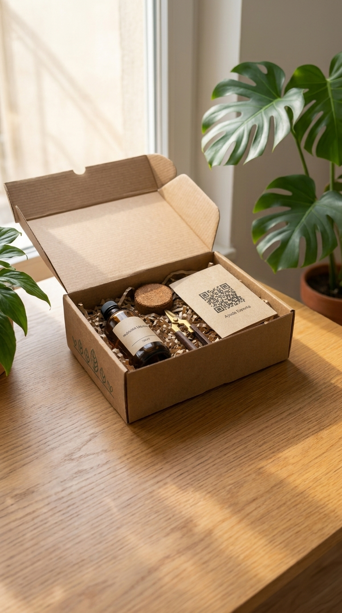
SIN PREOCUPARTE POR ABONOS
GRACIAS AL KIT BOTÁNICO
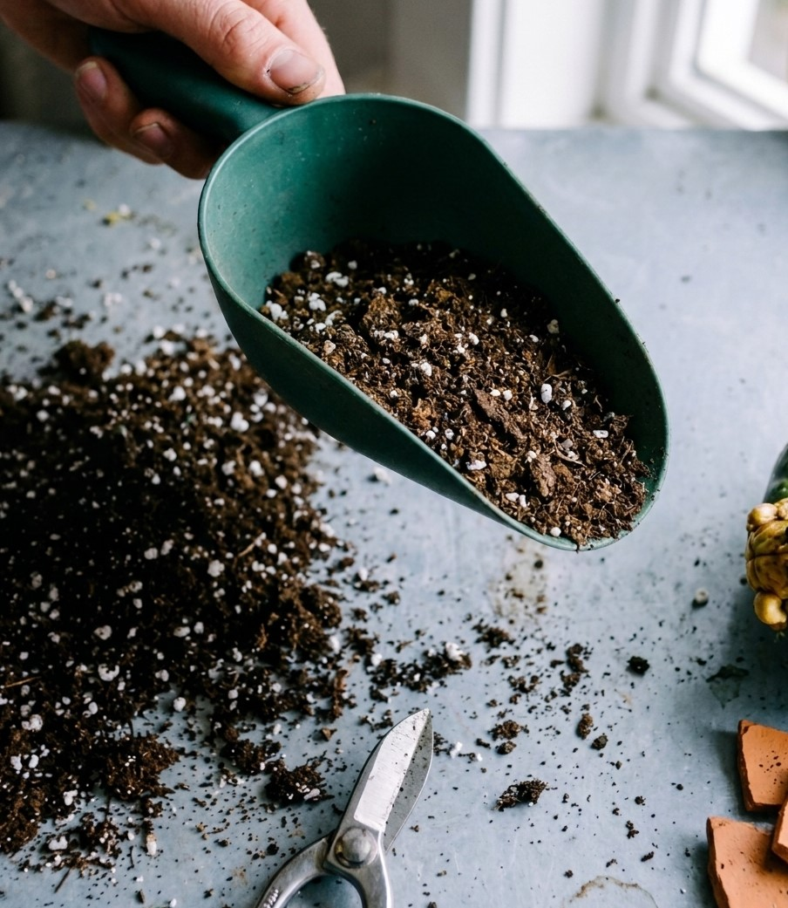
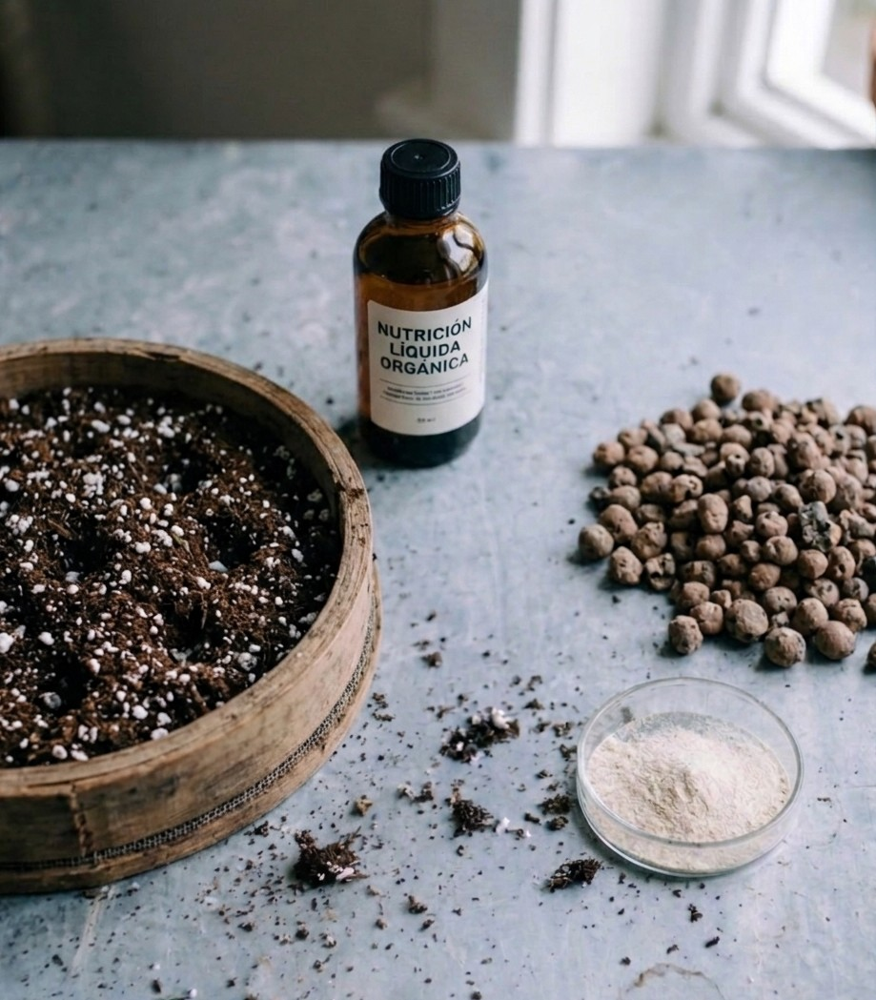
¿QUÉ INCLUYE EL KIT?
- - Nutrición líquida
- - Sustrato y tierra
- - Herramienta útil
- - Ayuda experta
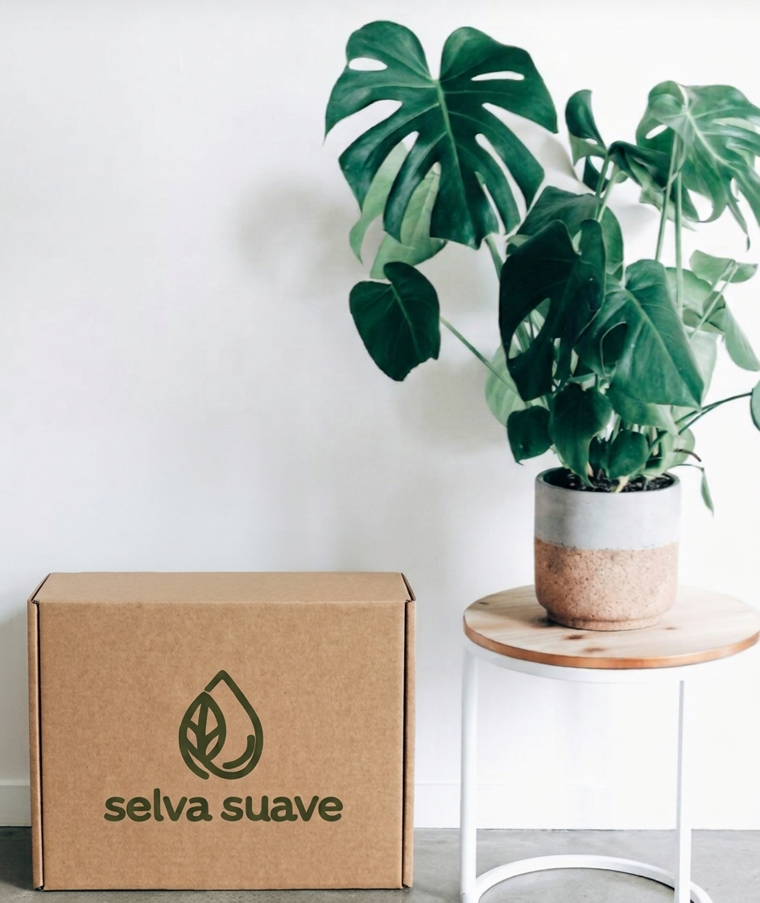
AL MES
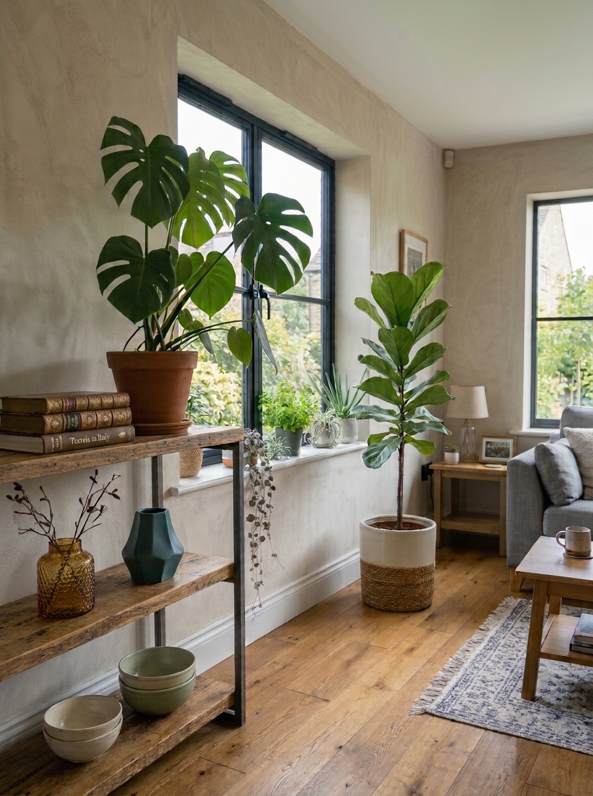
CUPIERA EN UNA CAJA?
DATOS CLAVE DEL SECTOR
Fuente: Elaboración propia a partir de Garden Magazine (2025), “Radiografía de los consumidores de Plantas y Flores en España”
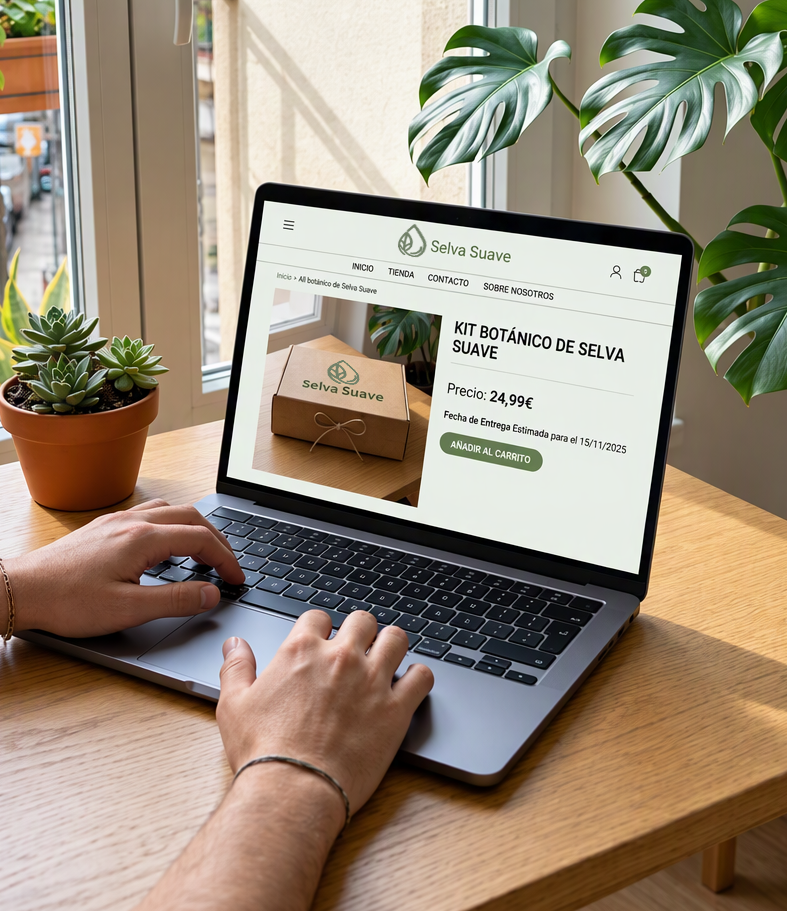
Razones por las que Selva Suave puede funcionar
Tal y como hemos visto, el sector del bricolaje, jardinería y decoración cuenta con demanda e interés real. Por ello, Selva suave se dirige a un público al que le gusta comprar plantas, materiales de cuidado, sustratos y complementos. Sin embargo, a la hora de comprar online este consumidor exige transparencia en los precios, una logística y envíos eficientes y una atención postventa excelente. Por ello, y como veremos a continuación, Selva suave no pretende vender únicamente kits botánicos, sino responder directamente a esos drivers, integrando inteligencia artificial, atención personalizada por WhatsApp, así como implementar Live Shopping y Social Commerce para acompañar y asesorar al usuario en cada etapa del proceso, acelerando así su decisión de compra. En las siguientes diapositivas, se detallan las razones de por qué Selva suave funcionará.
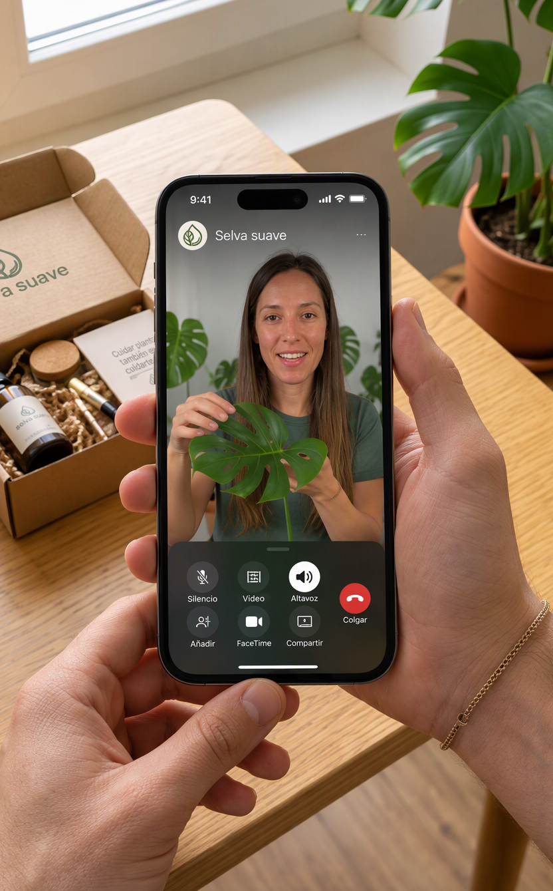
1. Porque existe una demanda consolidada para productos de decoración y de cuidado de las plantas.
Según el estudio de ecommerce anual de IAB Spain (2025), las categorías de hogar y decoración (38%) y bricolaje y jardín (25%) se sitúan entre las categorías más compradas de forma online en España. Aunque no se encuentran entre las primeras posiciones, sí que existe un mercado consolidado.
Las plantas de interior han pasado de ser un elemento puramente decorativo a convertirse en parte de los hábitos del cuidado del hogar. Ya no se trata de una compra puntual, sino de un estilo de vida que genera una demanda recurrente de productos como sustratos, nutrientes, herramientas y accesorios. Esto es clave para fidelizar al cliente mediante el modelo de suscripción de Selva suave.
Asimismo, los suministros de jardinería tradicionales, como las herramientas o los sacos de tierra de 10-20L, son pesados e incómodos de transportar. Sin embargo, Selva suave elimina este problema, ya que ofrece kits mensuales de reducidas dimensiones y fáciles de transportar.
Por tanto, la marca aprovecha una demanda ya existente mediante una propuesta especializada que combina productos, asesoramiento y comodidad de compra en un único servicio y se posiciona en la intersección entre decoración y cuidado de plantas, ofreciendo una experiencia adaptada al consumidor digital actual.
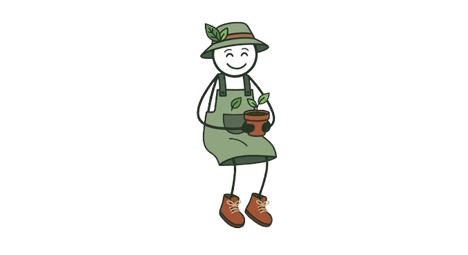
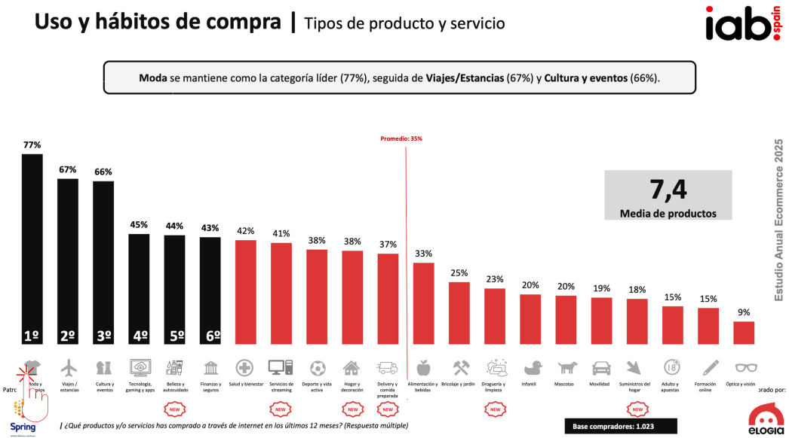
2. Porque el Live Shopping y el Social Commerce impulsan la conversión y aceleran la decisión de compra.
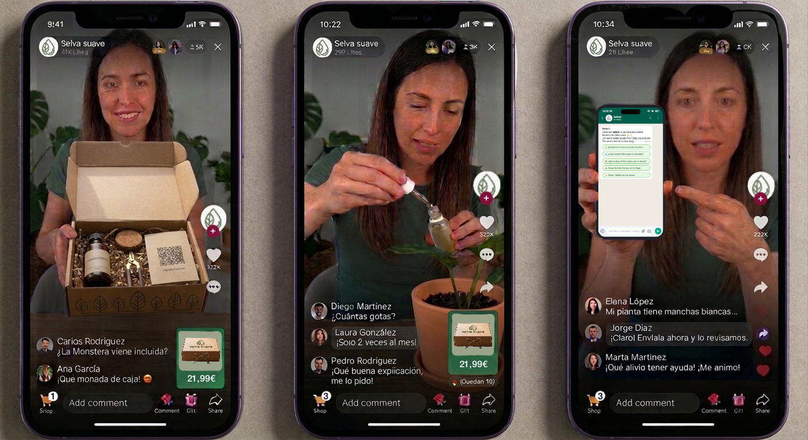
Selva suave se dirige a un público de entre 25 y 55 años que consume contenido en redes sociales y busca inspiración antes de comprar. Por ello, la marca apuesta por combinar la venta online con estrategias de Live Shopping y Social Commerce, dos estrategias que combinan entretenimiento, interacción y compra en un mismo lugar y que reducen la distancia entre el descubrimiento del producto y la conversión final.
Durante las emisiones en directo, Selva suave puede mostrar cómo utilizar los productos incluidos en cada kit, resolver dudas en tiempo real y presentar ofertas exclusivas disponibles solo durante la retransmisión. Esta interacción genera cercanía, confianza y reduce las objeciones habituales que surgen antes de la compra. Asimismo, el botón flotante estimula la compra impulsiva y puede generar tasas de conversión significativamente superiores a las de un ecommerce tradicional.
Además, al tratarse de un producto muy visual, el formato vídeo es perfecto para captar la atención de la audiencia. El usuario no solo descubre los productos, sino que aprende a utilizarlos y visualiza el resultado final, aumentando el interés y la intención de compra.
Por otro lado, la integración con plataformas como TikTok Shop o Instagram Shopping permite reducir pasos dentro del proceso de compra, ya que el consumidor puede descubrir el producto mientras consume contenido y adquirirlo sin abandonar la red social, favoreciendo la conversión. También, se puede utilizar el programa de afiliados de TikTok Shop para colaborar con creadores y así conectar con el público objetivo e impulsar las ventas.
3. Porque la IA y la personalización mejoran la experiencia e impulsan la fidelización.
La marca puede implementar automatizaciones similares a las del caso de Vilma Núñez, donde un usuario interesado comenta una palabra clave en redes sociales y recibe automáticamente información personalizada, un descuento o un enlace directo a la compra. Teniendo en cuenta que el 80% de las compras online se realizan por smartphone y que el 93% consume redes sociales, cerrar ventas directamente en el chat de Instagram evita perder clientes al llevarlos a una web externa. Con esto se puede captar usuarios interesados y simplificar el proceso de compra.
Asimismo, Selva suave puede utilizar un CRM para registrar información relevante de cada cliente, como las plantas que posee, los productos adquiridos previamente o las consultas realizadas al servicio de atención. Gracias a estos datos se enviarán recomendaciones personalizadas y recordatorios de tareas de mantenimiento.
El kit incluye un código QR para que los clientes contacten con un chatbot en WhatsApp (como el simulador de la derecha), lo que permite resolver dudas frecuentes relacionadas con el riego, la nutrición o la detección de plagas de forma inmediata. Sin embargo, los casos más complejos se derivan a especialistas para mantener una atención de calidad.
Finalmente, tal y como demuestra el caso de Starbucks que analizamos en clase, la combinación de CRM, personalización y automatización contribuye a fortalecer la relación con el cliente y fomentar la fidelización. Por ello, la IA y la personalización ayudarán a Selva suave a reducir costes operativos sin incrementar proporcionalmente los recursos humanos, mejorar la experiencia del cliente y construir una comunidad.
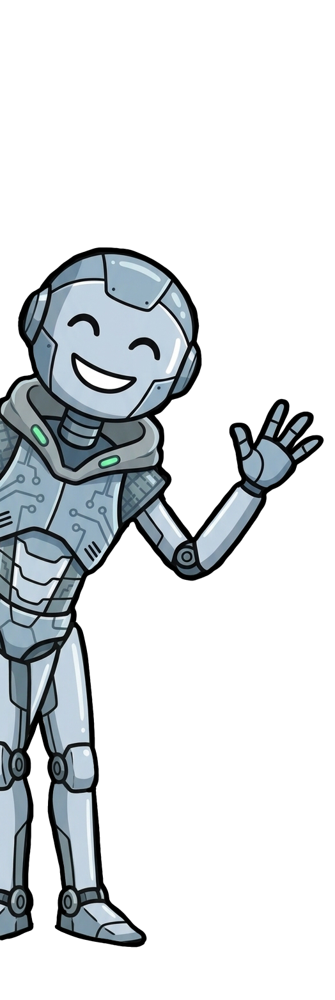
4. Porque responde a las principales prioridades de los consumidores al comprar en un ecommerce.
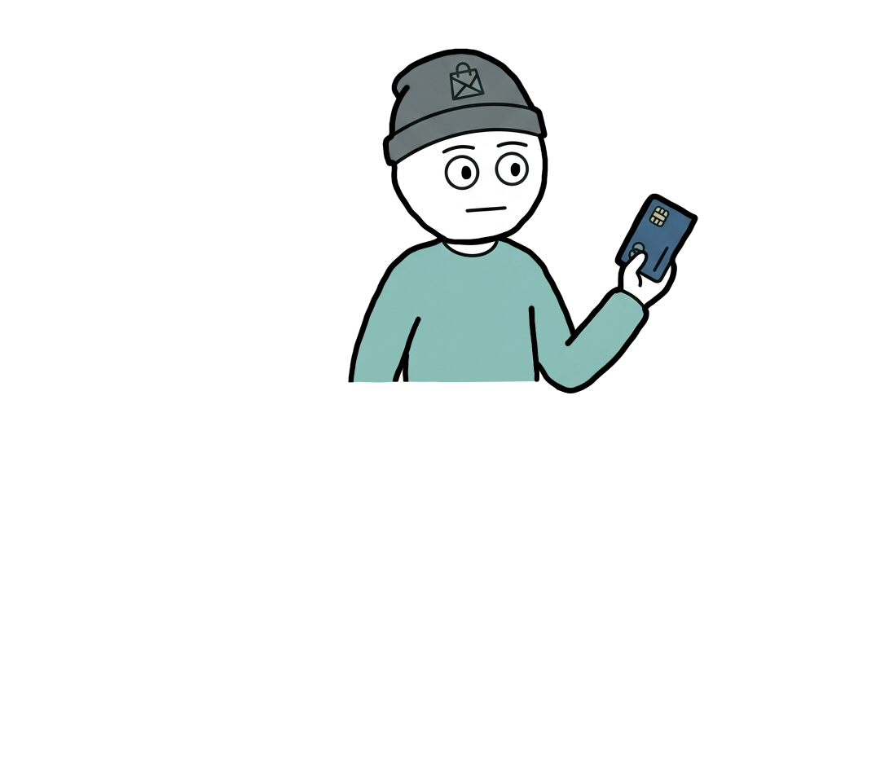
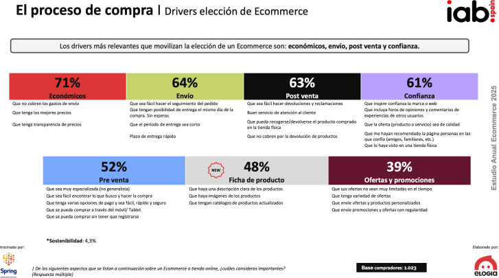
Según el estudio anual de ecommerce de IAB Spain (2025), existen diferentes factores que impulsan al consumidor a decantarse por una plataforma de comercio electrónico. Los consumidores valoran especialmente los factores económicos (71%), la logística y el envío (64%), la atención postventa (63%) y la especialización de la tienda (52%). Selva suave ha sido diseñada precisamente para responder a estos drivers.
Por un lado, la comercialización de kits estandarizados permite ofrecer precios claros y sin costes ocultos. Además, sus dimensiones reducidas simplifican la logística y facilitan entregas más eficientes en comparación con otros productos de jardinería de gran volumen.
Por otro lado, la marca incorpora un asistente automatizado en WhatsApp respaldado por atención humana especializada, lo que permite resolver dudas relacionadas con el cuidado, el riego, la nutrición o la detección de plagas antes, durante y después de la compra.
Finalmente, frente a los marketplaces generalistas, Selva suave está altamente especializada en el cuidado de plantas de interior. Esta especialización le permite ofrecer recomendaciones, contenidos y productos adaptados a las necesidades de un público concreto.
Gracias a todos estos elementos, la marca puede reducir barreras de compra, generar confianza y diferenciarse de los ecommerce generalistas, lo cual aumenta sus posibilidades de éxito en el mercado.
Uso de la inteligencia artificial generativa
Pasa el ratón sobre cada tarjeta para conocer más detalles
Creación de imágenes + música de fondo
Creación de imágenes + música de fondo
• Herramienta y versión utilizada: Google Gemini 3 (medio).
• Propósito del uso: Generación de imágenes para el desarrollo visual de la marca (logotipo y diseño del producto), para imágenes decorativas, así como para la generación de imágenes para ilustrar diferentes momentos de una sesión de live shopping. También utilicé Gemini 3 para crear la música de fondo.
• Método de verificación: Revisé todas las imágenes generadas por Gemini para asegurarme de que no contenían nada extraño. En alguna ocasión, tuve que pedirle a la IA que cambiase ciertos aspectos de la imagen para que se ajustara a lo que yo quería exactamente. Las imágenes de la sesión de Live shopping tuve que modificarlas a mano porque la IA no era capaz de representar exactamente lo que quería. En cuanto a la música de fondo, tuve que editar y cortar ciertas partes que no me gustaban. Adicionalmente, la IA me sugirió varios nombres para el ecommerce, de los cuales ninguno me gustó al 100%, así que adapté uno de los nombres sugeridos.
Desarrollo y diseño web
Desarrollo y diseño web
• Herramienta y versión utilizada: Claude (Sonnet 4.6).
• Propósito del uso: Generación de la estructura base del sitio web en HTML/CSS y diseño de las animaciones.
• Método de verificación: Revisé y modifiqué la estructura inicial que generó Claude. De esta manera, pude personalizar el diseño a mi gusto, incorporar todos los textos relacionados con la idea del ecommerce y los argumentos de porqué funcionaría, así como garantizar que el resultado final fuera visualmente atractivo y que garantizara una buena experiencia de usuario. Por tanto, Claude me dio la base sobre la cual fui trabajando.
Uso de la inteligencia artificial generativa
Pasa el ratón sobre cada tarjeta para conocer más detalles
Ideas para enfocar el ecommerce
Ideas para enfocar el ecommerce
• Herramienta y versión utilizada: Microsoft Copilot (modelo GPT-5).
• Propósito del uso: Generación de ideas para crear un ecommerce.
• Método de verificación: Primero contrasté las ideas que generó la IA con datos actuales del mercado para ver si había interés real. Como vi que había demanda en el sector del bricolaje y jardín, desarrollé el proyecto de ecommerce en torno a ese nicho, conectándolo con mis conocimientos y con lo que habíamos visto en clase.
Creación del chatbot de WhatsApp
Creación del chatbot de WhatsApp
• Herramienta y versión utilizada: Claude (Sonnet 4.6).
• Propósito del uso: Generación de la estructura, conversaciones predeterminadas y script básico para simular un chatbot de WhatsApp simple.
• Método de verificación: Comprobé manualmente el flujo conversacional que generó la IA, ajustando ciertos mensajes y respuestas para que resolviese las consultas con un tono natural y derivase a un experto cuando no tenga una respuesta preestablecida.
Desarrollo y diseño web
• Herramienta y versión utilizada: Claude (Sonnet 4.6).
• Propósito del uso: Generación de la estructura base del sitio web en HTML/CSS y diseño de las animaciones.
• Método de verificación: Revisé y modifiqué la estructura inicial que generó Claude. De esta manera, pude personalizar el diseño a mi gusto, incorporar todos los textos relacionados con la idea del ecommerce y los argumentos de porqué funcionaría, así como garantizar que el resultado final fuera visualmente atractivo y que garantizara una buena experiencia de usuario. Por tanto, Claude me dio la base sobre la cual fui trabajando.